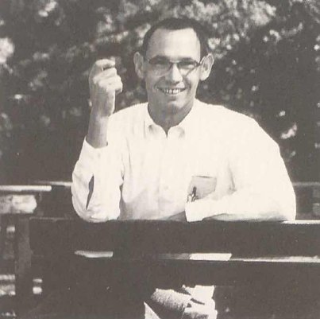

In memory of James E. Robertson

James E. Robertson, Emeritus Professor of Computer Science and Electrical Computer Engineering at the University of Illinois, Urbana-Champaign, passed away on March 2, 1993 at the age of 68.
Jim was born in Fairfax, Oklahoma on March 30, 1924, the son of Albion Lorenzo Robertson, a Cherokee Presbyterian minister, and his wife, Lena Seitz Robertson . He studied electrical engineering at Oklahoma A&M College and, after serving in the U.S. Army Signal Corps from 1943 to 1946, received his B.S. in 1947. He then attended the University of Illinois where he received his M.S. in 1948 and his Ph.D. in 1952, both in electrical engineering.
During his entire career he was associated with the Digital Computer Laboratory (which later became the Department of Computer Science) at the University of Illinois. During the period of 1947 to 1950, Jim held the positions of research assistant and Westinghouse Educational Foundation Fellow. He became an Assistant Professor in 1952, an Associate Professor in 1956, and a Full Professor in 1959. After leaving full time service at the University in January 1990, Jim purchased a second home in the mountains of New Mexico where he enjoyed hiking, camping, and exploring the native American culture of the southwest.
Jim played a pivotal role in the design and construction of the ORDVAC and ILLIAC I computers. He was responsible for the multiplication and division systems used in these machines as well as the detailed design of much of the control circuitry. He also served as chief engineer for the design and construction of the ILLIAC II.
Jim is perhaps best known for his contributions to the SRT division method and his work in general radix arithmetic. He holds a patent for the signed-digit format for digital c01nputer arithmetic. Jim attended and was a program committee member of every Computer Arithmetic Symposium since its inception in 1969. He served as a colleague, advisor, mentor, travel companion, and friend to many of us.
Jim, we shall truly miss you
Last Updated on June 8, 2018